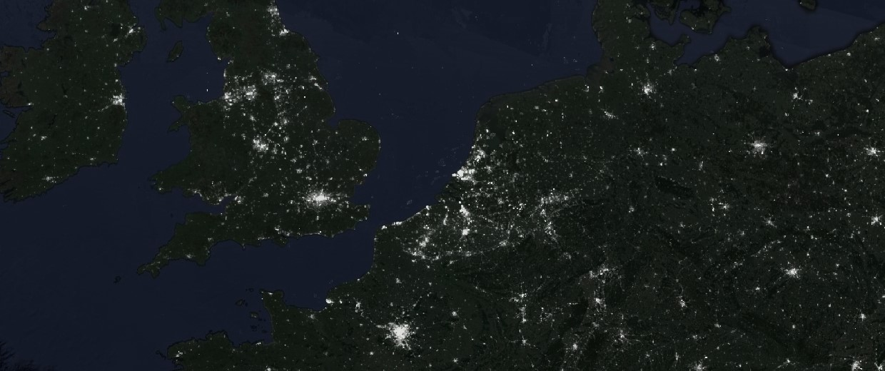

Geospatial Projects
Published GIS professional experienced in leading and executing diverse GIS projects, from generating multi-temporal land cover classifications and improving data import processes to deploying and administering ArcGIS Online Organizations.

Keep scrolling to explore past projects...
- May 2023 -
Arboretum
Restoration
ArGIS Online | ArcGIS Pro | HTML

Published tree database to ArcGIS Online and redesigned website. Alongside trail maintenance and management of daily operations, initiated research resulting in discovery of archival photographs from 1887.
- December 2022 -
Coastal Ecosystem
Modelling
Remote Sensing | TerrSett | Google Earth Engine

Generated multi-temporal Land Cover Classifications for coastal habitats using neural network and Mahalanobis classifiers. Lead team of Research Assistants, overseeing quality control for map classifications.
- June 2022 -
Deforestation
Analysis
Remote Sensing | Conservation Research

Analyzed 20 years of deforestation data, and the patterns and processes of forest loss in the Selva Maya. Revieved award for "Outstanding Research Supporting Environmental Education" upon publication.
- April 2021 -
Mangrove
Trends
JavaScript | Time Series Analysis | Remote Sensing Indices

Relying on historical Landsat data in Google Earth Engine, used a Mangrove Index to visualize Mangrove change over time in Myanmar.